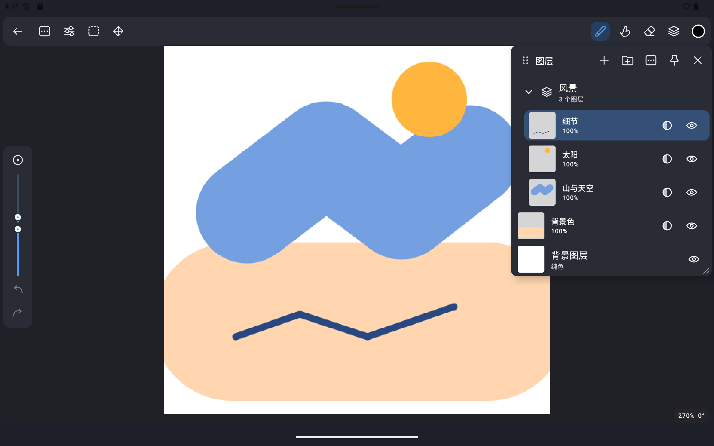
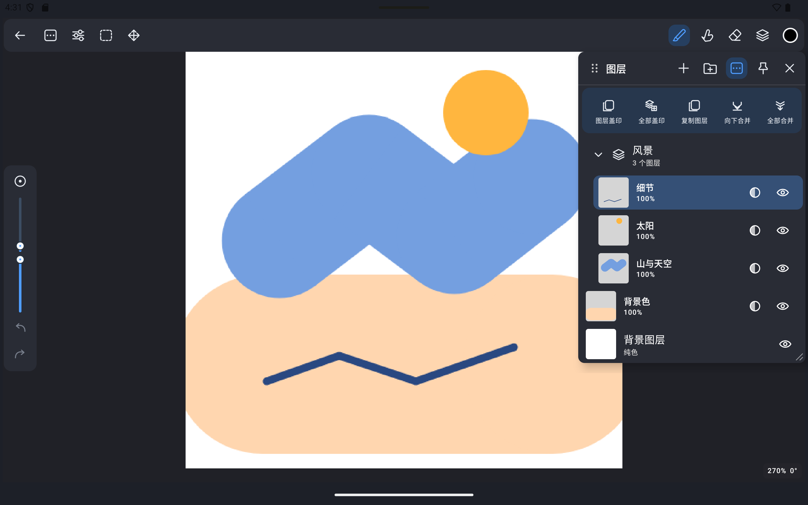
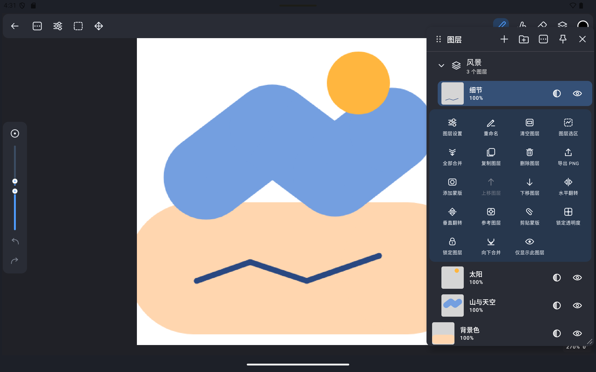

01认识图层
图层就像叠在一起的透明画纸。把草稿、线条和颜色分别放在不同图层，可以单独修改，不必重画整幅作品。
列表中靠上的图层显示在靠下图层的前面。
普通图层是绘画的目标；组内图层会向右缩进，方便查看层级。

02认识图层面板
在画布顶部导航栏点按图层图标打开面板。面板中的缩略图显示各层内容，图层名称下方显示透明度与其他状态。
| 位置或图标 | 作用 |
|---|---|
| 六个点 | 按住并拖动，移动面板位置。 |
| ＋ | 新建图层。 |
| 带加号的文件夹 | 新建图层组。标题栏图标可以由用户调整。 |
| 更多 ··· | 展开更多功能；在这一行上左右滑动查看更多图标。 |
| 图钉 | 固定面板。固定后，通常需要手动关闭面板。 |
| × | 关闭面板。 |
| 右下角斜线 | 拖动以调整面板宽度和高度，受屏幕及内容范围限制。 |
| 半明半暗的圆 | 展开该图层的不透明度滑动条。 |
| 眼睛 | 切换图层的显示或隐藏。 |
面板会记住用户调整后的位置和尺寸。需要更大的工作区域时，可以移动面板或关闭它。
03新建、选择和命名
- 在列表中点按目标图层，蓝色高亮表示它是当前图层。
- 点按标题栏的＋，新图层会建立在当前图层上方；选中图层组时，新图层会加入该组。
- 再次点按已选中的图层，展开图层功能，选择重命名即可输入名称。
当列表较长时，新建项目若在可视范围内，上方内容会尽量保持原位；若在范围外，面板会自动定位到新项目。列表底部空间不足时，滚动会停在边界。
04用手势整理图层
从右向左滑动图层，显示锁定、复制和删除；向右滑回可收起。
从左向右滑动非主选图层，可添加或取消多选。主选与其他选中项的高亮深浅不同。
按住图层并上下拖动来调整顺序；图层组或剪贴关系可能限制某些移动。
在两个图层位置放下手指并向中间捏合，可合并同一层级范围内的内容。
捏合涉及图层组时，同一组内的两个落点可以在组内合并；跨组时会按层级纳入相关图层组。剪贴层和基底会作为关联内容处理。合并受锁定、混合模式和内容尺寸等条件限制，遇到提示时请先调整相应图层。
05把图层整理成组
- 点按新建图层组建立空组；选中组内图层时，新组可建立在该图层上方的同一组内。
- 点按组名前的箭头，展开或折叠组；点按组名可以选中图层组。
- 在选中的组上再次点按，可展开图层组功能，例如复制、锁定、重命名、取消分组、合并图层组和导出 PNG。
也可以先向右滑动多个图层进行多选，再从更多功能中选择组合。分组会保留图层的相对顺序；某些剪贴或锁定关系需要先解除。
06使用和自定义更多功能
点按图层面板标题栏的···，在标题下方展开功能栏。左右滑动这一行，可以找到更多工具。

长按功能图标并拖到标题栏，可以把常用功能固定在顶部；从标题栏拖回更多区域即可移除。长按并拖动更多区域内的图标，也可以调整顺序。
点按当前图层或图层组展开的功能区域也支持拖拽排序。不同图层类型、锁定状态和选择数量会影响可用功能。

07透明度与混合模式
点按图层右侧的透明度圆形图标，拖动下方滑动条调整不透明度。数值越低，图层越透明。再次点按图标可收起滑动条。
在图层功能中进入图层设置，可以调整名称、不透明度、混合模式、饱和度和亮度。混合模式决定图层如何与下方颜色叠加；不确定时可以先使用“正常”。
08蒙版与剪贴蒙版
图层蒙版
- 选中图层，打开它的功能区，选择添加蒙版或编辑蒙版。
- 在蒙版编辑状态下绘制，使用界面的“隐藏 / 恢复”切换想要的效果。
- 完成后选择完成。已有蒙版可以停用、启用或移除。
剪贴蒙版
选择一个上方图层或图层组，在功能区选择剪贴蒙版。剪贴内容会受同层级下方基底的可见区域约束；列表中的箭头帮助识别剪贴关系。再次选择可取消剪贴。
09参考图层与选区
在图层或图层组功能中选择参考图层，可将其作为填色时的参考；再次选择可取消。应用同一时间使用一个参考图层或参考图层组。
选择图层选区，可以根据该层已有像素建立选区；图层组也支持按组内内容建立选区。如果图层没有像素，应用会给出提示。
10合并和盖印，有什么区别？
| 操作 | 结果 |
|---|---|
| 向下合并 | 将当前层与下方符合条件的图层合为一个图片图层。 |
| 合并图层组 | 将符合条件的组内图层合为一个图层，原组被替换。 |
| 全部合并 | 将普通图层合为一个图片图层，包含隐藏图层；特殊的背景图层保持独立。 |
| 图层盖印 | 根据所选可见图层生成一个新的图片图层，保留原图层。 |
| 全部盖印 | 根据当前可见画面生成一个新的图片图层，保留原来的图层。 |
盖印后仍可单独编辑原图层；合并后可使用撤销恢复。部分合并可能要求图层可见、未锁定、使用正常混合模式或解除有关剪贴关系，超出支持范围时应用会提示。
11背景图层
列表最下方的背景图层是特殊图层。点按它可以调整背景颜色和纹理；点按右侧眼睛可隐藏或显示背景。隐藏背景后，画布会显示透明格子。
背景图层始终位于底部，不参与普通图层的删除、排序和全部合并。
12导出、删除与撤销
在图层或图层组的功能区选择导出 PNG，然后选择保存位置。图层删除可从左滑菜单或图层功能中操作；只剩一个普通图层时，删除会清空该层内容并保留该层。
误操作后，可使用画布侧边的撤销；需要恢复刚刚撤销的操作时使用重做。锁定图层和透明度锁定会限制相关操作。
13常见问题
为什么有的按钮是灰色的？
按钮可能要求选中普通图层、选择多个图层、存在下方图层、解除锁定，或等待导出完成。检查当前选择和提示后再试。
为什么合并后隐藏的图层也出现了？
“全部合并”会包含隐藏的普通图层。若要保留原图层并基于当前可见画面生成新层，请使用“全部盖印”。
为什么捏合或向下合并提示不能操作？
请检查图层锁定、混合模式、剪贴基底和图层范围。受支持的条件因合并方式不同而不同，应用会在无法安全合并时给出提示。
图层窗口不见了怎么办？
再次点按顶部导航栏的图层图标。面板会尝试恢复上次的位置和尺寸，并限制在可用屏幕区域内。